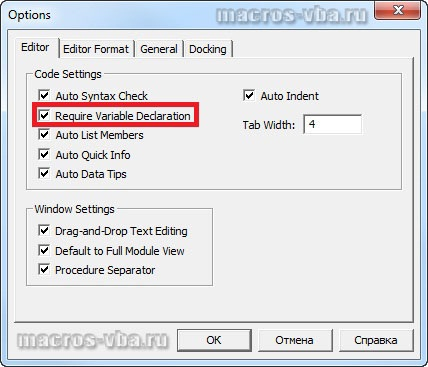

В предыдущей статье уже рассматривались способы явного и неявного объявления переменных, но стоит отдельно обратить внимание на такую команду VBA, как Option Explicit. Не смотря на то, что неявное объявление переменных простым их использованием удобно, с ним могут быть связаны определенные проблемы. При неявном объявлении переменной существует риск случайно создать новую переменную, когда необходимо использовать уже существующую. Такая ситуация может приводить к ошибкам, которые очень сложно выявлять. Использование оператора Dim для объявления переменных не всегда помогает предотвращать ошибки в коде, относящиеся к неявному объявлению переменных.
Для того, чтобы было проще обнаруживать ошибки, связанные с неявным объявлением переменных, в VBA предусмотрена команда Option Explicit. Использование Option Explicit препятствует неявному объявлению переменных, при этом VBA требует объявления всех переменных с использованием оператора Dim. Такие команды, как Option Explicit, называются директивами компилятора и инструктируют VBA о специфических правилах, которым должен следовать VBA при компиляции исходного кода. Option Explicit действует только в пределах модуля, в котором она прописана.
Для того чтобы установить режим Option Explicit, при котором VBA требует явного объявления всех переменных в модуле, необходимо добавить команду Option Explicit в начало модуля, перед любыми объявлениями переменных.
Если добавить неявное объявление переменной в этот модуль, VBA отобразит ошибку времени исполнения, сообщая о том, что переменная является необъявленной.
Редактором Visual Basic предусмотрена возможность автоматически включать Option Explicit в каждый новый модуль при его создании. Для этого необходимо в редакторе VB зайти в меню Tools/Options и в диалоговом окне "Options" на вкладке "Editor" поставить флажок перед опцией Require Variable Declaration (явное описание переменных).
